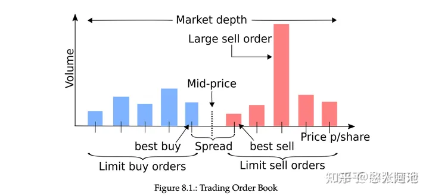

量化交易學習-訂單簿建模
出處:https://zhuanlan.zhihu.com/p/499342831
相關資料蒐集：
Quant最愛：【HFT系列】基於機器學習的動態高頻限價訂單簿框架（Tick資料）
Optimal high-frequency market making strategy research based on limit order book
https://github.com/timothyyu/gdax-orderbook-ml
Quant最愛：重構訂單簿！基於深度學習的A股Tick級價格變動預測
張楚珩：【強化學習 187】Order Book Trading + RL
陳穎：基於高頻limit order book資料的短程價格方向預測——via multi-class SVM
文兄：【量化策略】基於Level 2高頻資料的機器學習預測研究
基於Order Book的簡單特徵：以Optiver競賽為例
基於Order Book的深度學習模型：預測多時間段收益序列
相關的論文可是老多了，挑幾個：
https://arxiv.org/abs/2007.07319
DeepLOB: Deep Convolutional Neural Networks for Limit Order Books
一張圖解釋訂單簿：

可能能用的特徵：
- 基本：K線、交易量、大單交易量、趨勢指標等。
- 訂單簿快照資料，價格、數量、訂單數量、訂單持續時間
- 買單賣單跨度，買單賣單均值
- 加權平均價格
- 訂單價格差，累計加權價格差
- 買賣訂單密度，分佈刻畫。泊松分佈建模
- 訂單分佈的變化，變化速率
- 時間相關：每檔變化量，變化率，買賣檔位的變化差異。一段時間的新增限價單、市價單、取消單的總量，當前時段相對歷史的比例，總量變化率。對數收益率
模型目標：
- 趨勢分類：一段時間後的價格變化，分類模型
- 做市商演算法：AS模型的保留價格與最優差價
問題：
- 模型低訊號雜訊比，如何進行設計
- 間隔時間的參數調優，論文說2horizon最好。標的物的流動性建模。